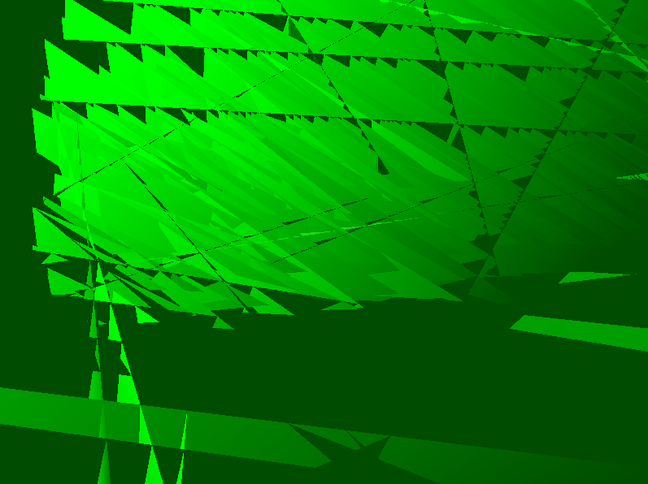
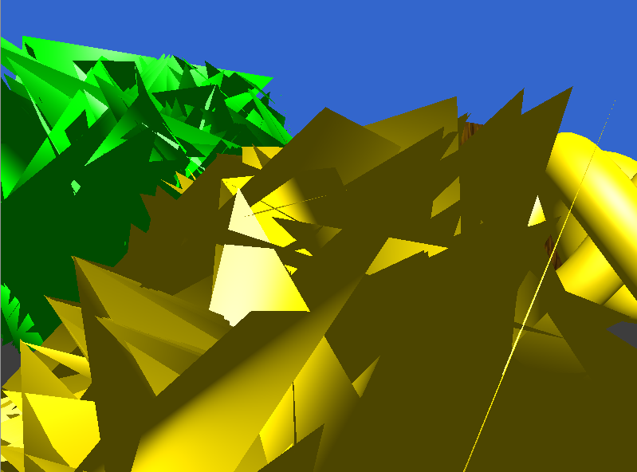
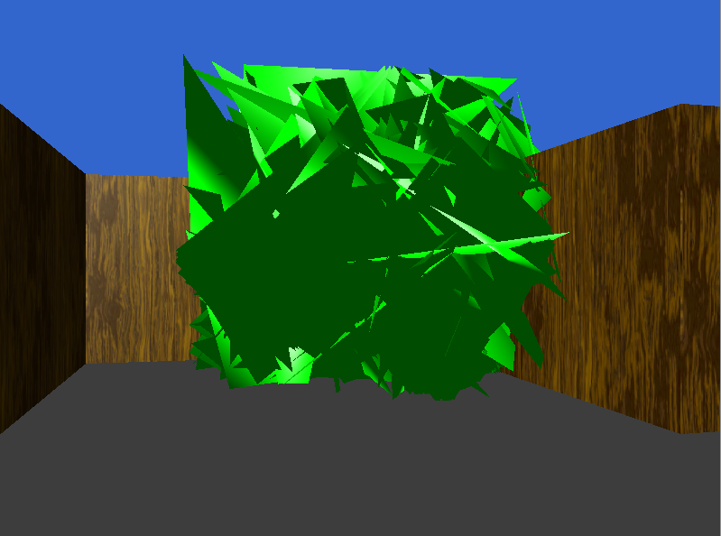
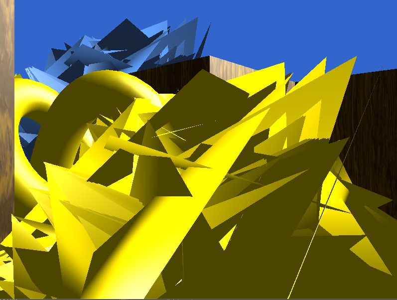
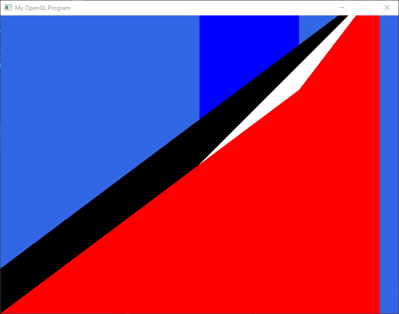
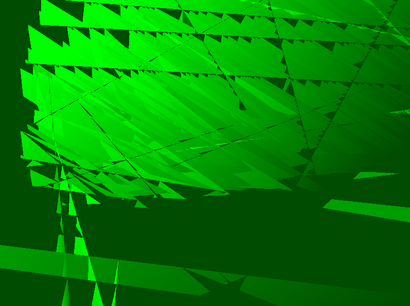
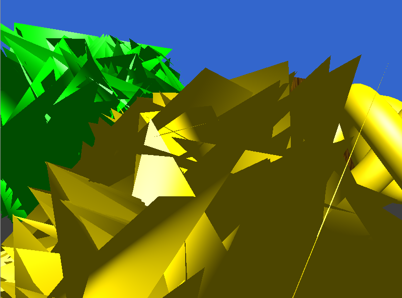
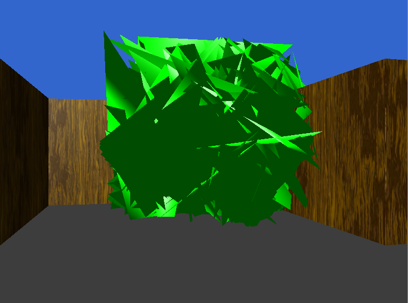
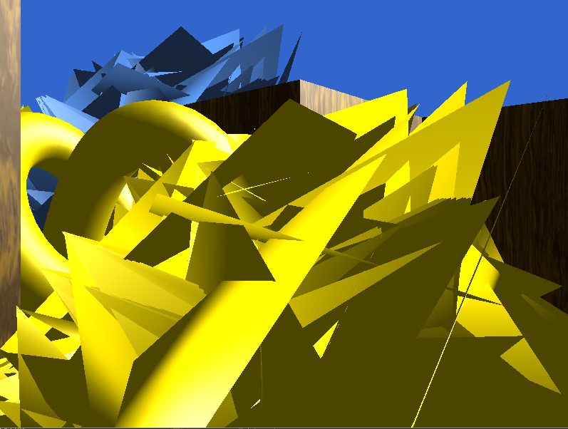
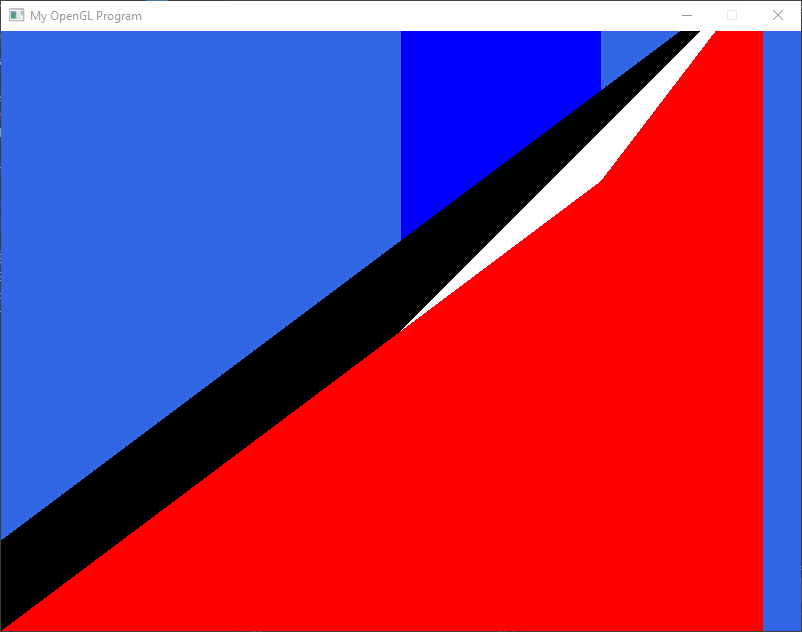

   
Some strange & incorrect camera movement math:

From when I had the wrong version of Glad:

Jackson Kruger
Source code can be found on Github (note: this is a version of the repository at the last commit I did before HW4 was due. In my current repository changes may have been made). I developed this game in Visual Studio on Windows. A zip of the compiled executable for Windows and the necessary assets can be found here: MazeGame.zip.
This game makes use of SDL2, glm, Glad, and (of course) OpenGL. As should be apparent in the code (on GitHub),
I made an effort to keep concerns within the game appropriately separated, so the main file, MazeGame.cpp, is really just a bootstrapper for the rest of the game. There are three main 'managers'
used to set up OpenGL data properly - ModelManager, ShaderManager, and TextureManager. The MapLoader parses map files and adds the appropriate GameObjects to a Map. Each GameObject has a pointer
to its Model, which stores the relevant vert and texture data (and registers itself with the ModelManager). Keys and Doors and such are subclasses of GameObject. The Camera and the
Player are separate classes, where the player handles movement, user inputs, and collisions, while the Camera tracks its relevant matrices and tells the shader what to use for the view matrix.
All position information is stored in Transforms (inspired by Unity). Every GameObject has a transform, which is really just a 4x4 matrix in homogeneous coordinates, that stores position, rotation,
scale, etc. A full transform hierarchy is also supported in the game - every transform may have at most one parent and any number of children. Each transform tracks its local transformation, and automatically
updates its world transform matrix when its parent changes. The Player's transform is a child of the Camera's transform. When Keys are picked up, they are parented to the player's transform.
Collision detection in the game is implemented solely through axis-aligned bounding boxes. Every GameObject has a BoundingBox, whose transform is a child of the GameObject's transform.
Each frame, the Player checks with the Map to see if it's intersecting any Walls or Keys, and acts accordingly if so. When a Key is held, it is checking with the Map to see if it's
intersecting the matching Door. The Player's BoundingBox is regenerated when the player rotates to ensure the BoundingBox remains axis-aligned.
The most difficult parts of the game to implement were the Transform hierarchy (for good reasons) and the BoundingBoxes (for less good reasons). I initially implemented the transform hierarchy using raw pointers to children and parents, which took a very long time to get working. Of course, after I got the raw pointers working I decided to switch to using C++ smart pointers. BoundingBoxes gave me trouble because I used my implementation from an abandoned version of my Raytracer. I assumed the BoundingBoxes worked. It took me far too long to realize that they didn't, for very simple reasons.
This was a friend playing the game for the first time. All of the game's features can be seen in this video. A few timestamps for specific features:
Results of Incorrect OBJ loading:




Some strange & incorrect camera movement math:
From when I had the wrong version of Glad:

The views and opinions expressed in this page are strictly those of the page author.
The contents of this page have not been reviewed or approved by the University of Minnesota.